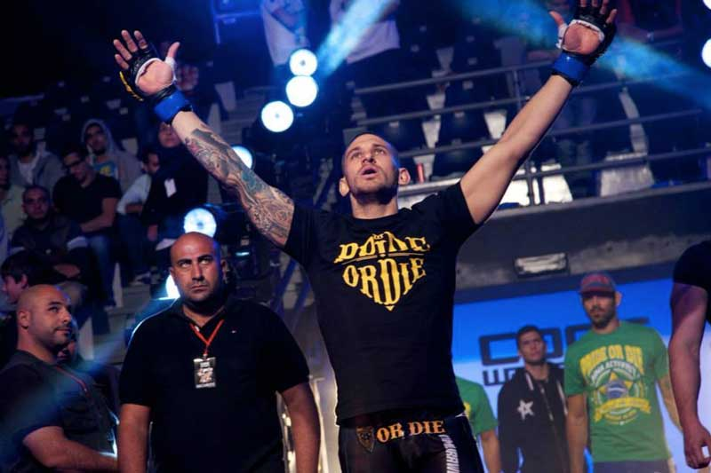
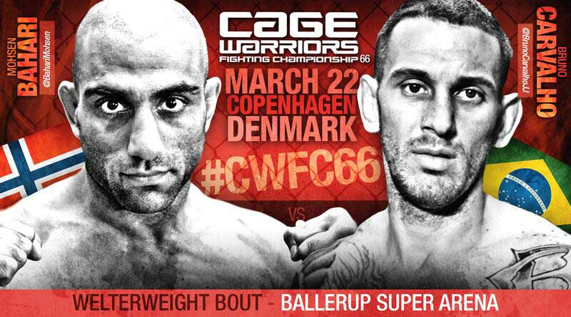

Entrevistamos Bruno Carvalho, Brasileiro, Vegano, lutador profissional de MMA que estará nos ringues no próximo Sábado 22 de Março no Cage Warriors 66 que acontecerá na Arena Ballerup em Copenhagen, Dinamarca, contra Mohsen Bahari da Suécia.
Bruno Carvalho tem 32 anos, 1,86m e é lutador profissional de MMA. Luta Judô, Jiu Jitsu, Wrestling e Muay Thai. Bruno tem as artes marciais em seu sangue e pratica esportes praticamente desde que nasceu, seu avô tem uma escola tradicional de Judô onde formou sua mãe e 4 tios faixas preta.
MV: Quanto tem que se tornou Vegano e por que fez esta opção?
Bruno C.: Eu fui fazendo a transição a vegetariano para cortar peso antes das minhas lutas vi alguns lutadores que eu gostava e eram Vegetarianos/Veganos, daí achei que estava me sentindo ainda melhor quando treinava assim e adotei como um estilo de vida!
MV: Como é o veganismo em seu esporte? Este estilo de vida torna algo mais difícil em seu esporte(aquisição de alimentos em Estolcomo, acessórios, suplementos, vestimentas)
Bruno C.:- Ainda é visto por muitos como loucura, que não comemos proteínas e todas essas balelas hahaha, morando na Suécia acho que me ajuda, consigo comprar de tudo que preciso e tenho bons patrocínios para os suplementos pelo betteryou.se
MV: Como é a sua alimentação durante o treinamento e antes das lutas? Já teve dificuldades para se enquadrar no peso?
Bruno C.: Como muuuuuuuito em off hahaha, os treinos são sempre exaustivos, quando vai se aproximando a hora de cortar peso aí a coisa aperta, gosto muito de fazer Shakes com frutas, verduras, legumes e proteína para beber durante o dia, assim o peso desce bem! Quando em Off eu como muitas saladas com quinoa, homus(hummus), culinária asiática e do oriente médio são minhas favoritas! Pego também ótimos conselhos do Manoel Castro Neto, que é um fisiculturista brasileiro e preparador físico residente no Brasil.
MV: Como começou a lutar e por que foi morar fora do Brasil?
Bruno C.: – Como disse, comecei cedo a minha família já lutava então foi só questão de tempo. Vim morar fora por convite para ensinar e acabei ficando, Já tem 8 anos que resido fora do Brasil.
MV: O que você diria par aquelas pessoas que afirmam que Veganos são fracos?
Bruno C: “Vamos dar um treininho! hahahaha”.
Para quem duvida do potencial vegano ou acredita que a dieta é deficiente ele recomenda: “Procurem se informar melhor, sugiro que deem uma olhadinha no meu Highlight vídeo, no meu Instagram ou página no YouTube ‘Bruno BC Carvalho’ depois tirem suas conclusões”
Assista ao vídeo Highlight do Bruno BC Carvalho aqui:
